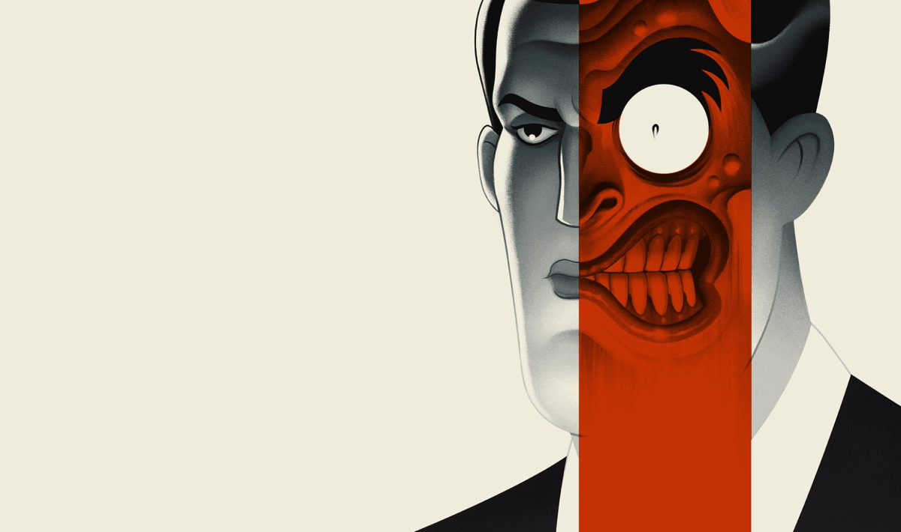
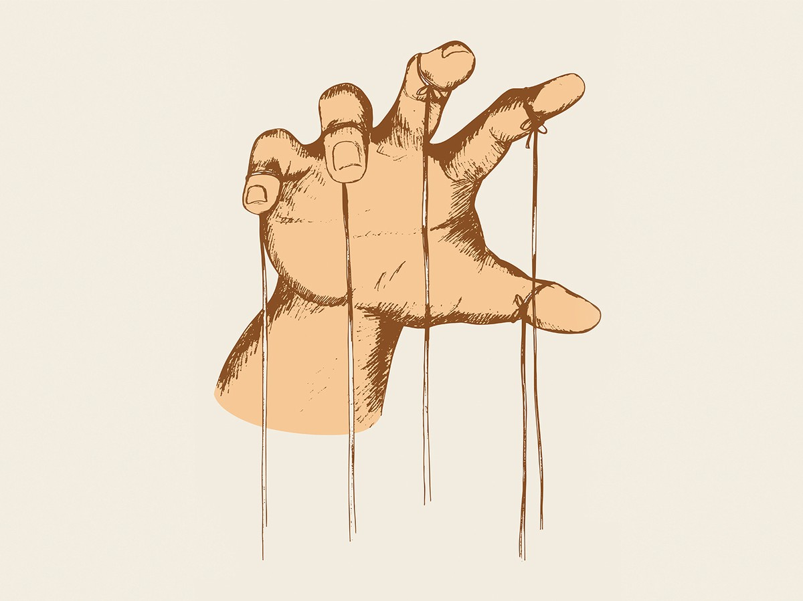
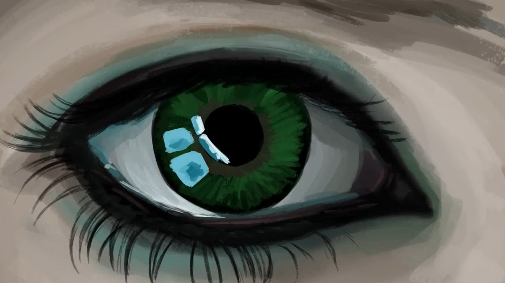

"Great texts provide valuable commentaries on the flaws of human nature, thus transcending the age in which they were created. Amongst these is the hubristic desire for control and authority over others."
This hubristic desire for control and authority comes to the forefront in William Shakespeare’s intense 17th century crime-of-passion tragedy, Othello, through none other than the conniving and egocentric antagonist, Iago. Throughout the tragedy, we are privy to Iago’s excessive, conceited self-obsession, which prompts him to conspire other peoples’ downfalls. Moreover, this timeless archetypal villain transcends epochs and their respective attitudes and values, as Tracy Chevalier excellently transposes this Machiavel into a contemporary context - a 1970s suburban Washington schoolyard - in her teen novel, New Boy. What this adaptation highlights unfortunately is how humanity’s flaws have remained irremovable blemishes on society, transcending time and place.
Duality and Deception
 Iago - the ultimate master in the art of deception.Status and power are clearly irrelevant when one character’s self-serving spite guides the plot of the tragedy. Although Othello, the tragic hero, may be a military general and has higher social and political standing, it is the scheming antagonist, Iago, who Shakespeare depicts as more powerful. Each scene portrays Iago with a reputation for honesty and loyalty, while each soliloquy provides the audience with a glimpse into his true self, and his devious plan to invent elaborate lies in order to exploit and manipulate other people. Iago’s Machiavel characteristic of false appearances is immediately expressed in the opening scene, “I am not what I am”, highlighting how he may appear trustworthy, understanding and compassionate, but he will be the opposite in reality. His fraudulent deception is vividly captured by his scheming strategy, “I follow him to serve my turn upon him.” Consequently, Iago’s highly manipulative motivations and behaviour - appearing loyal but being disloyal in reality - acts as a strategy to control Othello and impose his authority over him.
 Iago is the puppet master.Similarly, in New Boy, the antagonist Ian declares ‘Keep your friends close, your enemies closer,’ alluding to Sun Tzu’s “The Art of War”. He possesses the same proficiency in the art of deception, appearing honest and understanding, yet inventing intricate lies to ensnare Osei, the Othello analogue in New Boy, under his control. Ian’s meticulous scheming is revealed when he goes on ‘fact-finding missions’ to survey the playground in order to target vulnerable kids. Shakespeare’s original Machiavellian antagonist Iago is thus transposed from one era to another, showing how his characteristics transcend time. We can witness these deceitful traits just by looking at any number of corrupt political leaders who make false promises in order to gain authority over others.
Donald Trump, the perfect example of a modern day Machiavel.Jealousy
 'O, beware my lord of jealousy. / It is the green-eyed monster which doth mock / The meat it feeds on.' - Iago.Jealousy is often the catalyst for poisoning people’s relationships, and it is immediately evident Iago’s jealousy is the basis for his vehement animosity towards Othello. Being himself overlooked for promotion, Iago clearly begrudges Cassio when he is chosen as lieutenant, as he arrogantly overstates his value, ‘‘I know my price, I am worth no worse a place’. His hubris is further depicted when he disparagingly scoffs at Cassio, calling him ‘mere prattle, without practise’. Iago feels belittled and disrespected by Othello’s decision. Consequently, he craves superiority so that he can settle the score and regain his sense of pride.
Through New Boy, Chevalier shows that jealousy can also be encountered on a school playground, where students are free to create their own social structures. Ian has established himself at the top of the hierarchical order, by frightening anyone to get his own way. But he quickly develops envy when Osei ‘destabilises’ the hierarchies of the school and becomes a new leader: ‘A rage had coursed through Ian that he was still finding hard to control’. Ian’s fervent pursuit of authority is further highlighted by Chevalier: ‘He was one of those boys who never forgot if he was slighted, who would await his opportunity for revenge, even if it took years’. Through Chevalier’s depiction of Ian, we are able to see how society is continually driven by social and political standing. Thus professional jealousy is an ubiquitous influence on humanity, whether that be at work or school.
Envy at work.Iago also becomes jealous when Othello succeeds in convincing Desdemona to marry him. Meanwhile, Iago seems to be stuck in a loveless marriage to a woman who frequently nags him, “would she give you so much of her lips as of her tongue she oft bestows on me, you’d have enough”. He even suspects that she has been unfaithful to him: “I do suspect the lusty Moor hath leap’d into my seat”. The thought of Othello’s perfect marriage and his own loveless marriage makes him jealous. His jealousy is revealed when he cries out to Brabantio in order to break up Othello and Desdemona’s marriage. After this doesn’t work, the envious Iago asserts his authority over Othello with the intention of creating distrust between him and Desdemona, such that the two will eventually split. In New Boy, Ian experiences the same personal jealousy. While Osei and Dee are together, it produces a ‘shimmering aura’ of happiness and laughter. When Ian sees this, a ‘snarl’ presses onto his face, clearly envious of their joy.
Racism
'I hate the Moor' - Iago.Underlying all of Iago’s motivations is a deep-seated racism, highlighted when he constantly refers to Othello racially, as ‘the Moor’, rather than by his actual name. The Othering of Othello simply depicts him as a complete outsider, who is easily targeted by racists. Iago represents the superior Western European culture and values of the time, dehumanising Othello through constant bestial imagery, calling him a: "Barbary horse", "old black ram", "erring barbarian." Thus, Othello’s socio-political prospects are inevitably doomed; he can never be accepted in Venetian society. In New Boy, the unfortunate universality of racism highlights humanity’s lack of acceptance of Others, as Ian similarly sees Osei not as an individual but by his race, calling him simply the ‘black boy’. In every sentence, he associates the ‘black boy’ with depravity and vice. Fueling his jealousy is how an outsider could just walk in and become more popular than himself: ‘Just like that, the black boy had gained the respect of the most popular boy in school, was going with the most popular girl, and had laughed with Ian’s girlfriend’. Therefore, both Ian and Iago are tormented by the fact that a supposedly inferior black person can be more successful than themselves. They both seek to gain control so that they can assert their supposedly superior race.
Iago and Ian embody the universal flaws of human nature, and portray the innate potential in all of us of producing evil. Shakespeare and Chevalier have been able to portray compelling antagonists, not just for their meticulous Machiavellian ways, but also for their vivid representations of jealousy and hatred that we can all empathise with. In particular, the overarching theme portrayed in both Othello and New Boy is the overwhelming pursuit of pride and honour that burdens us in our own lives and spurs us on to extreme lengths in order to maintain it - through lies, deception and manipulation. They are also great texts which challenge our views on racism, exhibiting the wickedness and cruelty it can bring out of all of us.